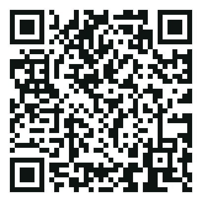
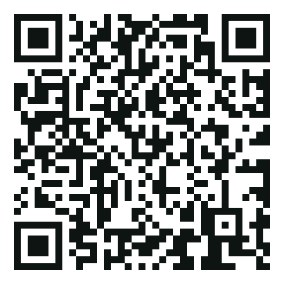
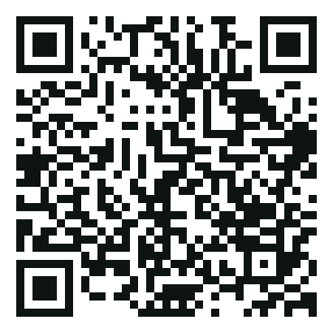
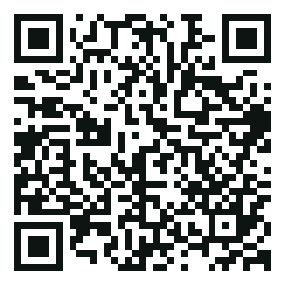
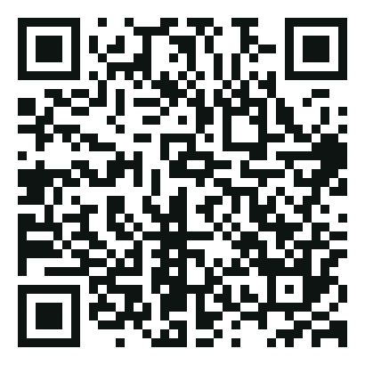

OPERACIJA DVINA · MISIJA 1 / MISSION 1

Nuskenuok telefonu ir atrakink misiją · Scan with your phone to unlock the mission
https://plateliai.lt/game/#/unlock/5ac475
OPERACIJA DVINA · MISIJA 2 / MISSION 2

Nuskenuok telefonu ir atrakink misiją · Scan with your phone to unlock the mission
https://plateliai.lt/game/#/unlock/fb483f
OPERACIJA DVINA · MISIJA 3 / MISSION 3

Nuskenuok telefonu ir atrakink misiją · Scan with your phone to unlock the mission
https://plateliai.lt/game/#/unlock/2f83c4
OPERACIJA DVINA · MISIJA 4 / MISSION 4
Nuskenuok telefonu ir atrakink misiją · Scan with your phone to unlock the mission
https://plateliai.lt/game/#/unlock/9c6e57
OPERACIJA DVINA · MISIJA 5 / MISSION 5
Nuskenuok telefonu ir atrakink misiją · Scan with your phone to unlock the mission
https://plateliai.lt/game/#/unlock/63c7d2
OPERACIJA DVINA · MISIJA 6 / MISSION 6

Nuskenuok telefonu ir atrakink misiją · Scan with your phone to unlock the mission
https://plateliai.lt/game/#/unlock/7197e9
OPERACIJA DVINA · MISIJA 7 / MISSION 7

Nuskenuok telefonu ir atrakink misiją · Scan with your phone to unlock the mission
https://plateliai.lt/game/#/unlock/72836a